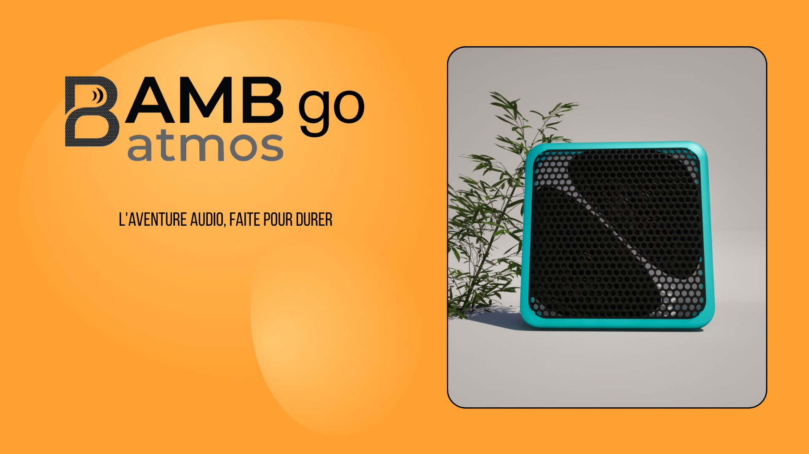
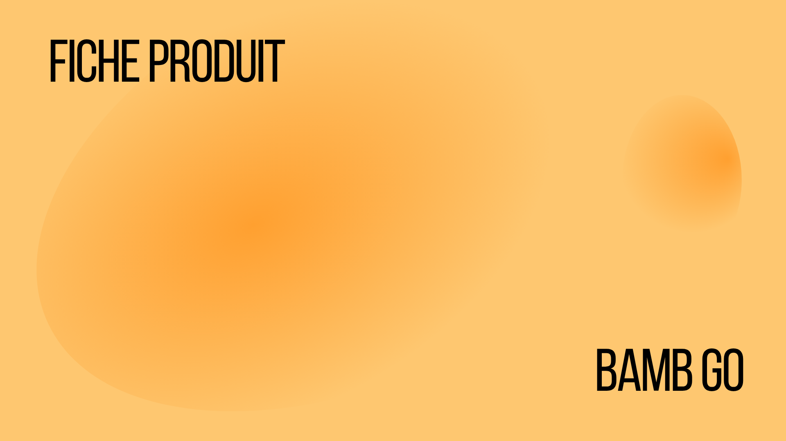
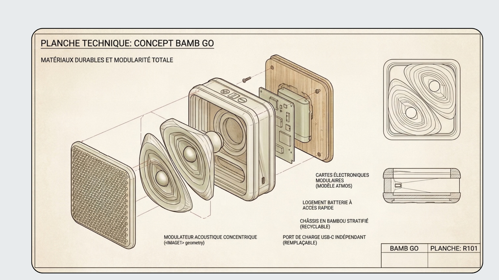
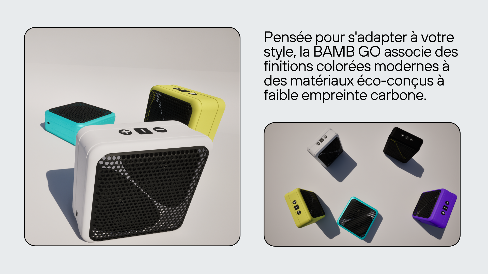
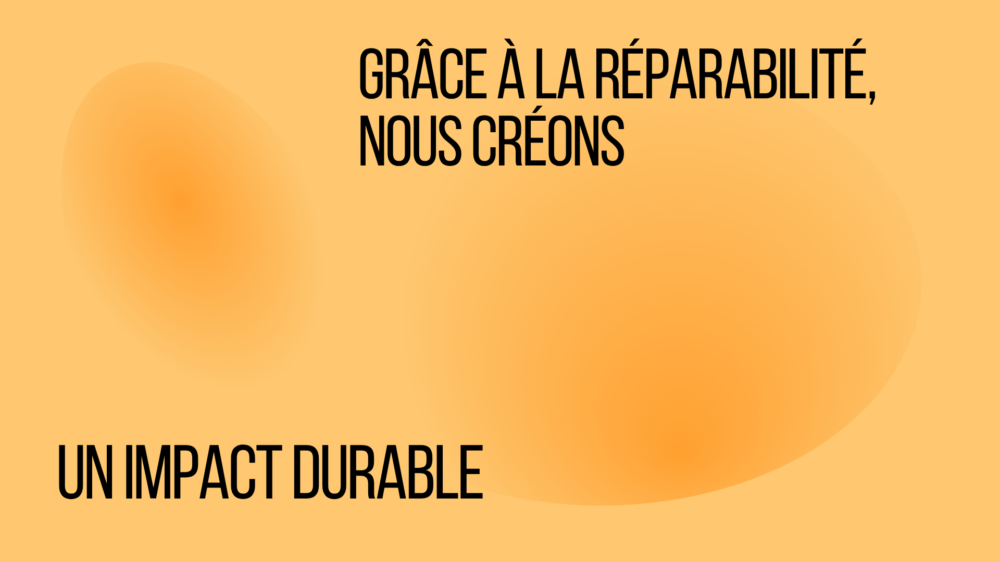
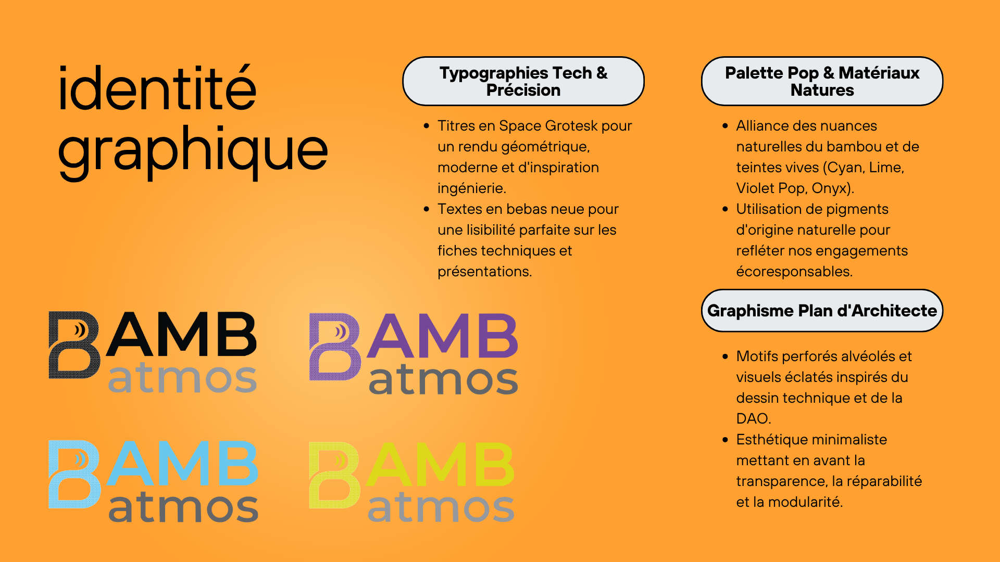

CV
Profil
- Nom : Adrien Hoffmann
- Métier : Artiste 3D / Art graphique
- Spécialités : Environnements 3D, génération procédurale, digital painting, identité visuelle
Compétences
- Modélisation 3D & sculpture
- Création d’assets & génération procédurale
- Digital painting & illustration
- Direction artistique & branding
Contact
- Email : adrien.hoffmann@example.com
📄 Voir / télécharger mon CV 2026 (PDF)
Portfolio 3D
Trois projets autour des environnements virtuels, des assets et de l’infini généré.

3D 1 — Art environnemental
Environnements naturels et extraterrestres.

3D 2 — Assets & génération procédurale
Création d’assets et terrains procéduraux.

3D 3 — Vers l’infini
Explorations spatiales et concepts infinis.
3D 1 — Art environnemental
Série d’environnements 3D explorant différents biomes : jungle luxuriante, dunes minérales et paysages martiens. Le travail porte sur la composition, l’éclairage atmosphérique et la création d’espaces immersifs.


3D 2 — Création d’assets & génération procédurale
Recherche sur la création d’assets réutilisables et la génération procédurale de végétation et de falaises. Les vidéos montrent l’évolution de la végétation et des formations rocheuses générées algorithmiquement.

3D 3 — Vers l’infini
Exploration de l’espace et de l’infini à travers des scènes 3D et des animations contemplatives. Ce projet joue avec l’échelle, le vide et la lumière cosmique.


Portfolio Art Graphique
Trois axes de création : dessin, identité de marque, et passage du 2D au 3D.

Art graphique 1 — Dessin & art graphique
Illustrations, croquis et explorations graphiques.

Art graphique 2 — Marque & client
Identités visuelles et créations pour des clients.

Art graphique 3 — Du 2D au 3D
Parcours d’une idée sketchée jusqu’à sa version 3D.
Art graphique 1 — Dessin & art graphique
Série de dessins et illustrations mêlant techniques traditionnelles et digital painting. On y trouve des croquis d’animaux, des portraits et des expérimentations graphiques.


Art graphique 2 — Marque & client
Deux projets distincts : un travail d’illustration réalisé en BTS pour un livre pour enfant, et les visuels créés pour Yayo, une marque de vêtements fondée avec deux amis.
Projet BTS — Livre pour enfant
Illustrations réalisées dans le cadre de mon BTS pour un projet de livre pour enfant.


Yayo — Marque de vêtements
Visuels réalisés pour Yayo, la marque de vêtements que j’ai créée avec deux amis.


Bamb Go
Présentation du projet Bamb Go : recherches graphiques, identité visuelle et mise en situation du produit.






Art graphique 3 — Du 2D au 3D
Ce projet montre le passage d’une idée en digital painting à sa réalisation en 3D. Villes futuristes, îles tropicales et forêts stylisées : chaque création existe en version 2D, IA et 3D.